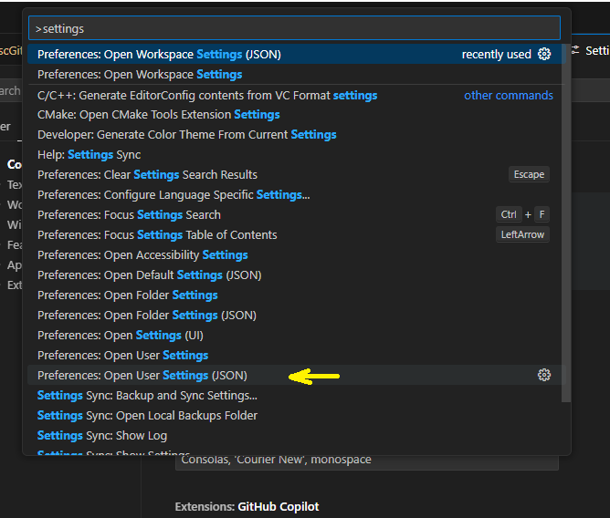
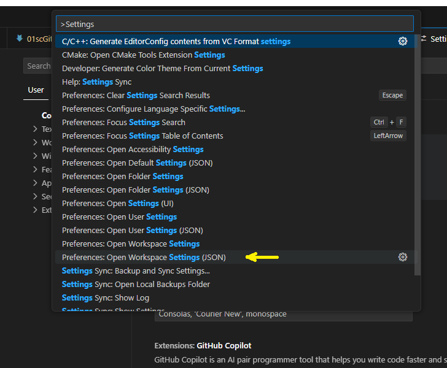

Advanced Tools (DRAFT)🔗
- Basic Markdown and Markdown Cheatsheet
- Complete Markdown for Material
- Material overview
- Material YouTube Video
VS Code Settings🔗
Making changes to settings.json (information only)🔗
There are two possibilities for making the required settings changes to vsCode:
- User Settings - affecting all vsCode projects (called 'workspaces')
- Workspace Settings - affecting the active workspace only.
You should find that the workspace settings are already applied for all our MkDocs repositories. Therefore, this section is for information only.
Access User settings.json🔗
- To find your user settings.json, launch the command palette with Ctrl+P.
- Type
settingsto see all related commands. - If you wish to modify your user settings for all workspaces (all projects) you can do so here. This should not be required.

Access Workspace settings.json🔗
With the workspace (or local repo directory) open, you should find that the workspace settings for this project have already been modified. These settings are stored in the .code-workspace file at the root of the project. This is best accessed using this command palette item:

Suggested modifications to settings.json🔗
The following code should be included in one or both of these settings files. Note that in the *.code-workspace file, this should be placed between in the curly brackets after settings: {
- Ensure your settings file is saved
Be aware of syntax. Don't forget commas.
Don't forget to place a comma after your previous entry in the settings.json file if you are only taking a subsection of this code.